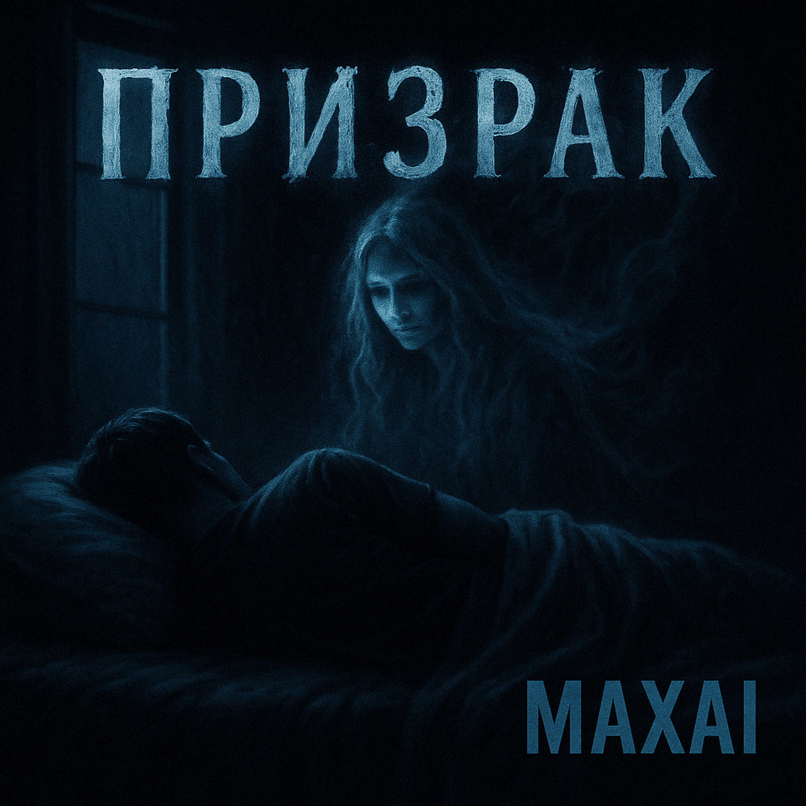

Призрак
19.06.2025

Текст трека
В моей жизни давно всё обычно:
Встречаюсь, одеваюсь прилично,
На работу с утра уезжаю,
В магазин каждый день заезжаю.
Ужин в шесть я всегда завершаю,
Вечера за компом уважаю,
Зубы все перед сном очищаю
И в кровати свой день провожаю.
Ночами вновь приходишь ты
В руках с осколками мечты
И, словно призрак темноты,
Уносишь в бездну пустоты.
Меня утром разбудит будильник,
За окном вновь туман и пустынно,
Я спешу на работу, как прежде,
Растворяясь в безликой надежде.
Повторяется день за днём,
Серый свет за моим окном,
Я живу, но как будто без смысла,
Погружаясь в поток механизмов.
Ночами вновь приходишь ты
В руках с осколками мечты
И, словно призрак темноты,
Уносишь в бездну пустоты.
И опять среди ночи ты рядом,
Тень с прощальным и грустным взглядом,
Я тянусь, но сквозь пальцы теряю,
Понимая, что вновь проиграю.
Растворяясь во мгле и печали,
Ты уходишь, и я в этой дали
Остаюсь одиноким во тьме,
С бесконечной тоской в тишине.
Ночами вновь приходишь ты
В руках с осколками мечты
И, словно призрак темноты,
Уносишь в бездну пустоты.
Эмоциональное состояние
До прослушивания:
Состояние рутины, серости, внутренней усталости, ощущение механической жизни.
После прослушивания:
Лёгкая грусть, ощущение утраты и воспоминаний, но вместе с тем — катарсис и принятие собственной уязвимости.
Смысловое ядро
Трек «Призрак» — это история о разрыве между внешней обыденностью и внутренними переживаниями. Призрак — символ утраченной мечты, воспоминания или чувства, которое вновь и вновь возвращается по ночам.
Структура
Лирика делится на куплеты с описанием быта и рефрены, в которых появляется образ призрака. Стилистика ровная, с повторяющимися рефренами и четкой сменой настроения между днем и ночью.
О том, кто поёт
Вокал — сдержанный, почти будничный в куплетах, и более эмоциональный, открытый в рефренах. Исполнение подчеркивает контраст между механическим днем и одушевленной ночью.